Editing the Chassis.
A few notes...
In the process, we are using the famous Russian T-54!
Make a folder on your C: root and name it !_T54. The exclamation mark will push it to the top of the listing in windows explore.
You can NOT change the track section of the model. This is because it has weights that FBX can not export.
You can edit the carriage section. Its complex and takes a great deal of effort to get things to work in game.
Its easy to delete polygons and entire wheels.
You can rescale wheels and change their geometry as long as you maintain the Vertex Colors that are associated with that wheel.
If you move a wheel from its original location, it will cause the wheel to 'orbit' around its previous center.
The work around for this problem is moving the Markers.. When you move a marker, it will update the visual about the wheels location.
JLdragon and myself spent many hours figuring out how to make this work by simple trial and error.
As mentioned before in Visual Markers page, each wheel has a unique vertex color.
Before attempting to edit the carriage, it is a good idea to use the texture viewer to mouse over the carriage parts to get a better understanding of how the vertex colors work.
The process we have been using to know how a wheel fits, is to clone one of the wheels and parent it to the marker you want to move.
First.. Let me explain how to split off a clone and a few other things.
Put the carriage in vertex color view mode.
Right click on the component in the Layer Explorer window and than click on Properties..
A window will open with all the properties for that component. Check "Vertex Channel Display" near the bottom left.
This will force Max to display the vertex colors in the render window. Close the Properties window.
| 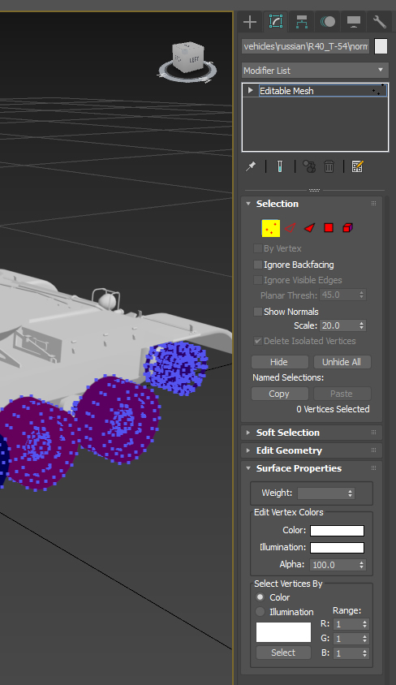 |
Hide everything but the hull and carriage components.
Select one of the carriage halfs.. Some models have the entire carriage as one object.
Go to edit mode (square icon at top of modifier stack as seen in this image).
Click the Vertex Mode selection icons.. The one with the 3 points in yellow.
At the bottom of the stack, there is a roll out panel called "Select Vertices By".
This is used to select vertices by color. Set the range to 1 in the channels R,G and B.
Click the color box there.. in this image its white. A color picking window will open.
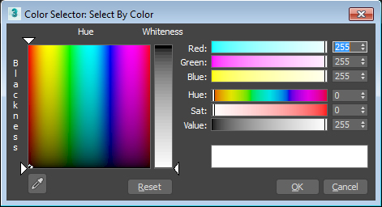
Click the Eye Dropper and click the front right wheel.
The color should change to what you just picked with the Eye Dropper.
Now, click on Select at the bottom. This should select all the vertices that match the color.
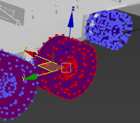
Go to Detach on the Edit Geometry roll out and click it. Set the values of the window that opens to the same as this image of it.
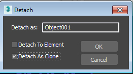 Click OK.
|
Next.. Hide everything but the Hull and the new Object001. Go to its properties and uncheck "Vertex Channel Display" and close the properties window.
Find the Marker that sits in the middle of that new cloned wheel. Hide all the other Markers. It should look something like this at this point:
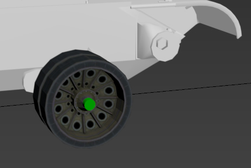
Next we want to "Parent the wheel to the Marker". To do this, drag the object001 in the Layer Exporter and drop it on top of the Marker.
After it should look like this:
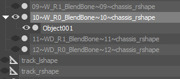
Now, When you move the Marker, the wheel will follow!
We are doing this so we know where to place the Marker in relation to the ground and the tank.
Its an easy way to know if our wheel will display in game in the right location. Remember.. the Marker controls the wheels location in the game engine!
Select the Cloned wheel.. go to the modifier stack and select By Element. Select the wheel entire wheel. Drag a box around it.
Click and hold the scale button on the top window menu and select the 2nd item down. Also set the scale by center under the ribbon looking icon.
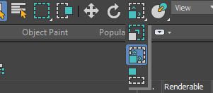 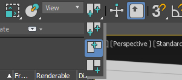
On the bottom of the window in Max, there are 3 places X, Y and Z to type numbers in to.. Type 125.0 in Y and Z. Take note of the scale. You will need it for the other wheels!
Click anywhere in the window to unselect elements and than unselect By Element in the modifier stack.
The wheel should be a bit bigger now.
Next.. we need to add a plane to the represent the ground. Add a plane at Y zero large enough to cover the area under the tank.
Change its name to include "Clone" in it. "Clone_Plane001" for example.
Now that we know where the Wheel makes contact with the ground, you can move the wheel by moving its parent marker.
Don't move just the wheel.. Remember the Marker controls where the wheel will be displayed in the game!
Press F12 so the position window shows up. Take note of where this Marker is.. You will need it to move the other Marker on the other side!
Rename the cloned wheel to from "Object001" to "Clone001". Renaming it so clone is in the name will make Tank Exporter ignore it during FBX import.
Note: I failed to select the rims interior so it did not get scaled. Be careful and make sure you have all of the wheel selected!
Your wheel and Marker should look something like this:

Next.. Hide the wheel and the Marker.. Un hide the carriage on that side with the wheel.
Select the carriage.
Go to the modifier stack and select By Element.
Select all but the two out side ground wheels and press delete. Delete the Drive and Idler Wheels at each end of the carriage.
Make sure you do NOT delete any Markers or anything else but the wheels and the suspension for them.
Select the wheel we cloned and change its scale to what we did to the cloned copy.. 125 on Y and Z. DO NOT MOVE IT!
Click anywhere to unselect and than un-select By Element.
After all this, this side of the tank should look very close to this image!
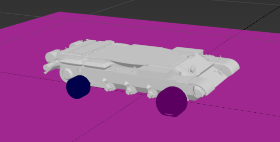
The wheel is poking through the ground plane.. That's good and what we want!
We scaled it up but didn't move it! Only the Marker for its location was moved.
Now we are going to test this in the game.
Export everything as an FBX from Max. Add _Max to its name when you export it.
You will get an error about the Plane object.. Planes have no Y thickness so Max will convert it to a mesh.
If you don't change its name to include "Clone" in it. TE will think you are adding a new model!
You don't need to un hide anything as TE doesn't care about visibility in a FBX. Other apps do including Max.
Import the new FBX in Tank Exporter. You will see that the wheel is scaled but its location has not changed.
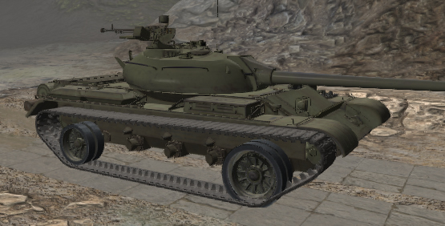
This is because TE does not turn each part of the carriage's wheels in to individual models that can be moved. TE can only show their scale.
Write the Primitive. (I'm assuming you have followed the previous processes in the help pages and know how to get around in Tank Exporter).
Check the "Hide Tracks" box and the Chassis box. Tank Exporter should of checked the Chassis box for you.
Load up the game and see how it displays in World of Tanks.
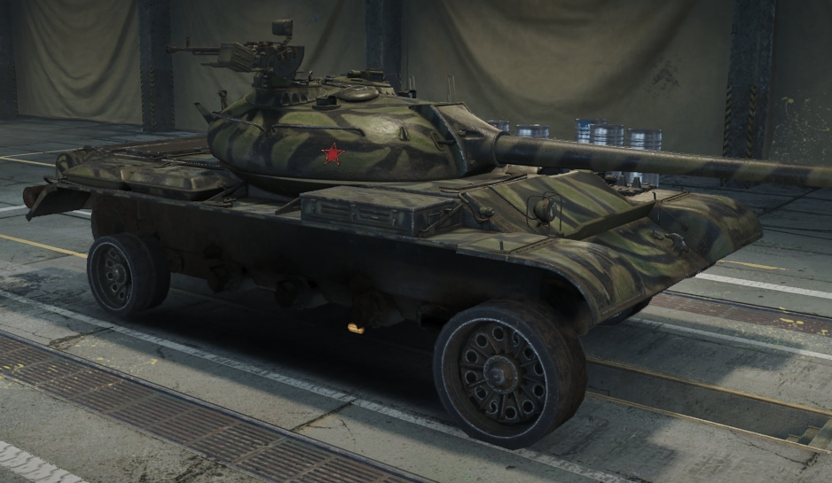
If you have any problems, go over the process again.